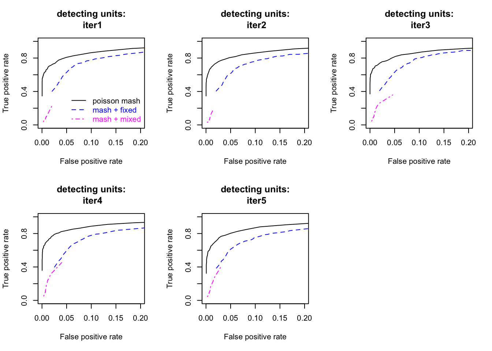
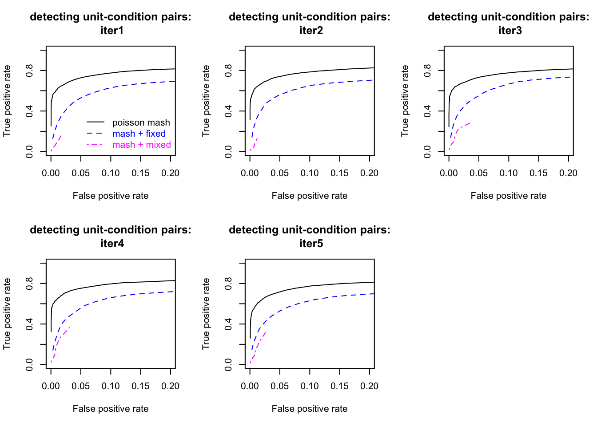
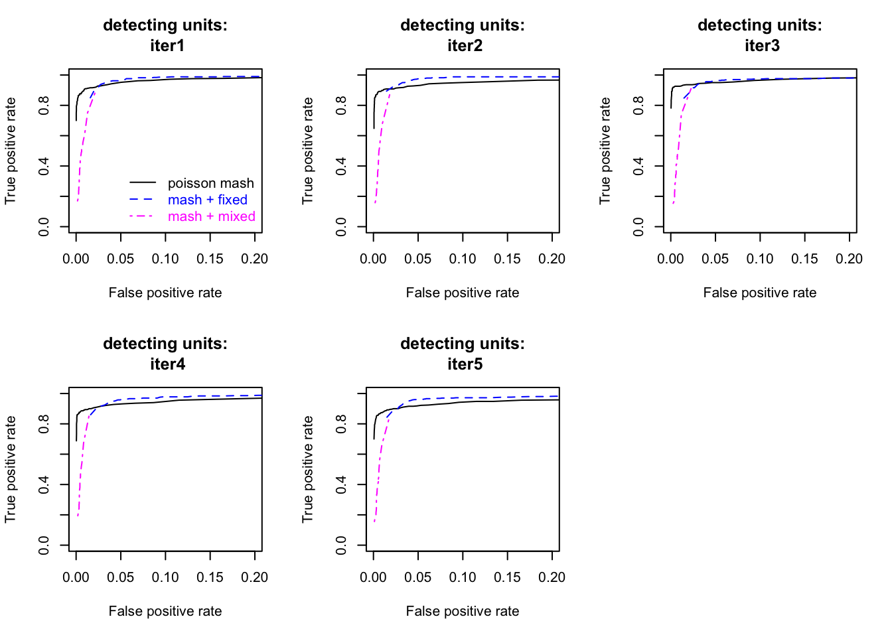
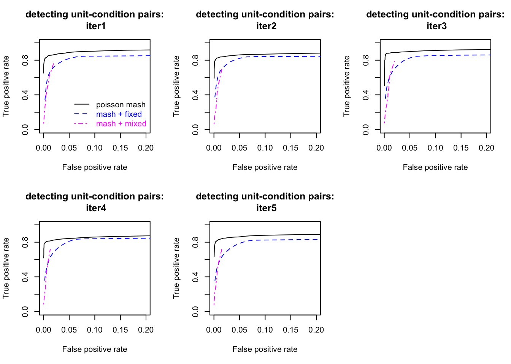
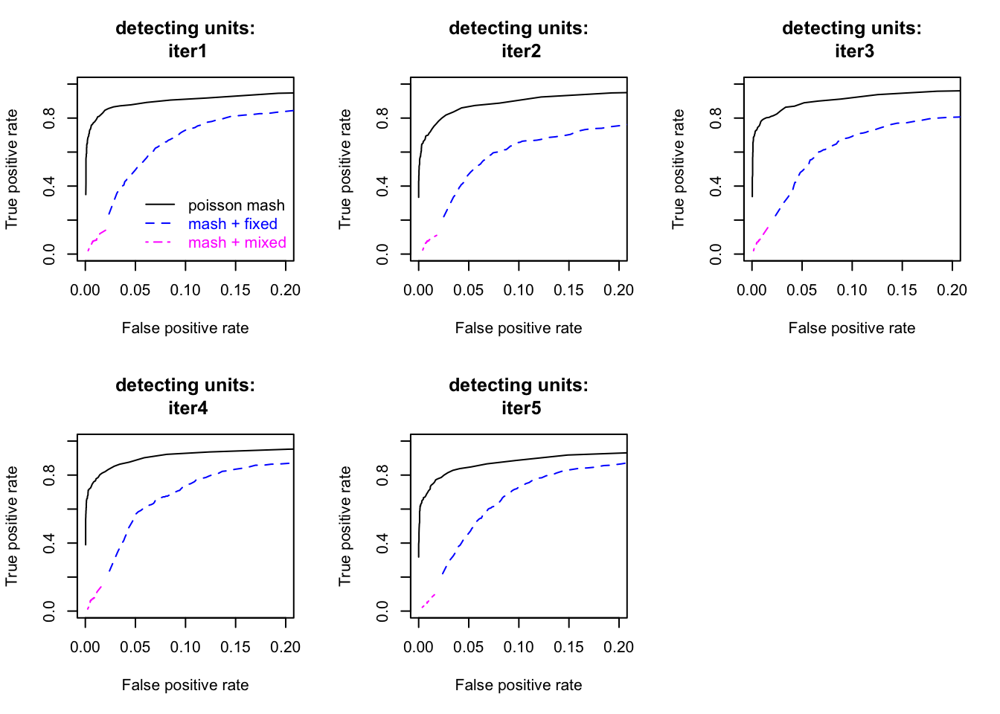
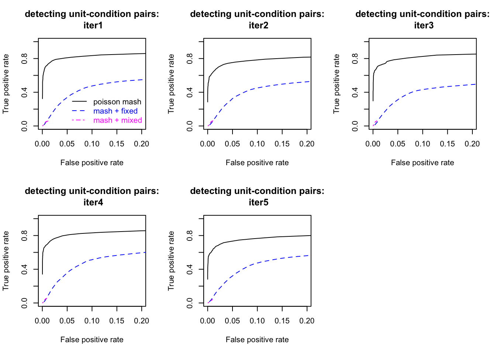
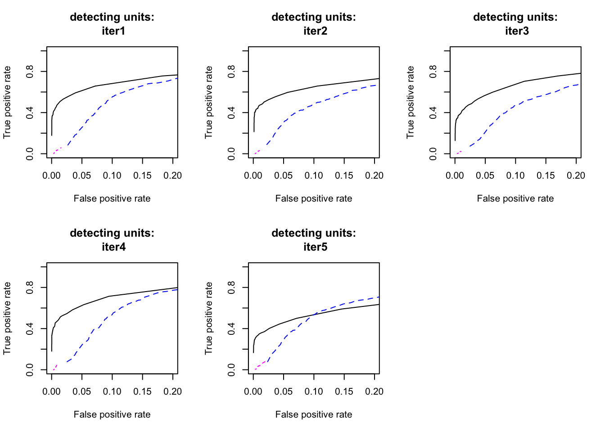
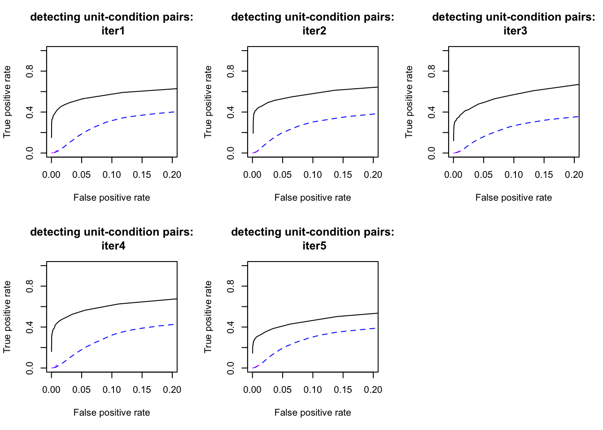

Last updated: 2020-09-17
Checks: 7 0
Knit directory: poisson_mash/
This reproducible R Markdown analysis was created with workflowr (version 1.6.2). The Checks tab describes the reproducibility checks that were applied when the results were created. The Past versions tab lists the development history.
Great! Since the R Markdown file has been committed to the Git repository, you know the exact version of the code that produced these results.
Great job! The global environment was empty. Objects defined in the global environment can affect the analysis in your R Markdown file in unknown ways. For reproduciblity it’s best to always run the code in an empty environment.
The command set.seed(20200618) was run prior to running the code in the R Markdown file. Setting a seed ensures that any results that rely on randomness, e.g. subsampling or permutations, are reproducible.
Great job! Recording the operating system, R version, and package versions is critical for reproducibility.
Nice! There were no cached chunks for this analysis, so you can be confident that you successfully produced the results during this run.
Great job! Using relative paths to the files within your workflowr project makes it easier to run your code on other machines.
Great! You are using Git for version control. Tracking code development and connecting the code version to the results is critical for reproducibility.
The results in this page were generated with repository version 64455b3. See the Past versions tab to see a history of the changes made to the R Markdown and HTML files.
Note that you need to be careful to ensure that all relevant files for the analysis have been committed to Git prior to generating the results (you can use wflow_publish or wflow_git_commit). workflowr only checks the R Markdown file, but you know if there are other scripts or data files that it depends on. Below is the status of the Git repository when the results were generated:
Ignored files:
Ignored: .DS_Store
Ignored: .Rhistory
Ignored: code/.DS_Store
Ignored: output/.DS_Store
Untracked files:
Untracked: code/code_random_effects.R
Untracked: code/examples.R
Untracked: code/examples_updated.R
Untracked: code/util6.R
Untracked: code/util8.R
Untracked: code/util_ed.R
Untracked: code/util_random_effects.R
Untracked: code/util_random_effects_v2.R
Untracked: data/data_jr.RData
Untracked: output/B_cells/
Untracked: output/Ctrl2/
Untracked: output/IL12p70/
Untracked: output/Ly6C-/
Untracked: output/ed_all_trts_maxiter1500.Rds
Untracked: output/ed_second_batch_maxiter1500.Rds
Untracked: output/ed_second_batch_v2_maxiter2000.Rds
Untracked: output/ed_v1_maxiter1000.Rds
Untracked: output/ed_v2_maxiter1000.Rds
Untracked: output/examples.pdf
Untracked: output/examples/
Untracked: output/examples_mash.pdf
Untracked: output/mash_data_limma.rds
Untracked: output/mash_data_second_batch.rds
Untracked: output/mash_fit_limma.rds
Untracked: output/mash_fit_limma_all_trts.rds
Untracked: output/mash_fit_second_batch.rds
Untracked: output/non_null_sim_setting1/
Untracked: output/non_null_sim_setting2/
Untracked: output/non_null_sim_setting3/
Untracked: output/non_null_sim_setting4/
Untracked: output/null_sim/
Untracked: output/pois_mash_contrast_posterior_all_trts.Rds
Untracked: output/pois_mash_contrast_posterior_second_batch.Rds
Untracked: output/pois_mash_contrast_posterior_second_batch_v2.Rds
Untracked: output/pois_mash_fit_all_trts.Rds
Untracked: output/pois_mash_fit_second_batch.Rds
Untracked: output/pois_mash_fit_second_batch_v2.Rds
Untracked: output/poisson_mash_fit.Rds
Untracked: output/poisson_mash_fit_contrast_posterior.Rds
Untracked: output/realdata/
Untracked: output/simulations/
Note that any generated files, e.g. HTML, png, CSS, etc., are not included in this status report because it is ok for generated content to have uncommitted changes.
These are the previous versions of the repository in which changes were made to the R Markdown (analysis/sim_signal_B_cells.Rmd) and HTML (docs/sim_signal_B_cells.html) files. If you’ve configured a remote Git repository (see ?wflow_git_remote), click on the hyperlinks in the table below to view the files as they were in that past version.
| File | Version | Author | Date | Message |
|---|---|---|---|---|
| Rmd | 64455b3 | yushaliu | 2020-09-17 | Update some results |
| html | fceb44f | yushaliu | 2020-09-16 | Build site. |
| Rmd | c80f953 | yushaliu | 2020-09-16 | Add more application and simulation results for other cell types |
We apply poisson mash, fixed effects-based mash and mixed effects-based mash to simulated single cell data with differential expression across conditions in a subset of genes.
We start with a subset of the single cell cytokines data, which include 1) 9,902 cells from \(R=25\) conditions from the second batch, and 2) 6,849 genes that have at least 250 total counts over these 25 conditions. We remove genes that have relatively few reads because we will add signals to the data via thinning.
Starting with the real dataset, we randomly permute the cells with respect to the condition labels (the same permutation to all the genes), so that there does not exist association between gene expression levels and conditions. Then we use thinning to add 1) fixed effects \(\beta_{jr} \sim \sum_k \pi_k MVN(0, U_k)\) to a subset of genes, and 2) random effects \(\eta_j \sim MVN(0, \: \tau_j^2 I_R)\) to all genes. For fixed effects, the prior covariances \(U_k\)’s are learned from the poisson mash fit to the original dataset, with the effect size (in terms of \(\max_r \mid \beta_{jr}\mid\)) further scaled to be realistic. For random effects, we simulate \(\tau_j\) such that its distribution resembles the empirical distribution of \(\tau_j\) we see from the poisson mash fit to the original dataset.
We consider four different ways to add fixed effects to a subset of genes:
We simulate 5 single cell datasets for each scenario.
load("output/B_cells/sim_signal_summary.RData")
### look at the number of identified genes at alpha=0.05
# poisson mash
num.pois[,alpha==0.05][1] 423 406 439 437 391# fixed effects-based mash
num.mash[,alpha==0.05][1] 802 772 804 842 790# mixed effects-based mash
num.dream[,alpha==0.05][1] 75 61 90 96 94### look at the FDR for identifying genes at alpha=0.05
# poisson mash
fdr.pois[,alpha==0.05][1] 0.007092199 0.004926108 0.004555809 0.009153318 0.017902813# fixed effects-based mash
fdr.mash[,alpha==0.05][1] 0.3740648 0.3691710 0.3743781 0.3978622 0.3810127# mixed effects-based mash
fdr.dream[,alpha==0.05][1] 0.4133333 0.5081967 0.3555556 0.3541667 0.3617021### look at the FSR for identifying unit-condition pairs at alpha=0.05
# poisson mash
fsr.pair.pois[,alpha==0.05][1] 0.04692522 0.05463774 0.04282407 0.07905687 0.07611016# fixed effects-based mash
fsr.pair.mash[,alpha==0.05][1] 0.2907733 0.2861839 0.2638682 0.2835246 0.2960343# mixed effects-based mash
fsr.pair.dream[,alpha==0.05][1] 0.3854289 0.4110276 0.2555380 0.2816501 0.3261218### plot ROC for detecting genes
par(mfrow=c(2,3))
for (iter in 1:5){
plot(fpr.pois[iter,] , tpr.pois[iter,], type="l", xlim=c(0, 0.2), ylim=c(0, 1),
xlab="False positive rate", ylab="True positive rate", main=paste0("detecting units:\n iter", iter))
lines(fpr.mash[iter,], tpr.mash[iter,], lty=2, col="blue")
lines(fpr.dream[iter,], tpr.dream[iter,], lty=4, col="magenta")
if(iter %% 5 ==1)
{
legend("bottomright", legend=c("poisson mash", "mash + fixed", "mash + mixed"), text.col=c("black", "blue", "magenta"),
col=c("black", "blue", "magenta"), lty=c(1,2,4), bty="n")
}
}
| Version | Author | Date |
|---|---|---|
| fceb44f | yushaliu | 2020-09-16 |
### plot ROC for detecting non-null pairs
par(mfrow=c(2,3))
for (iter in 1:5){
plot(fpr.pair.pois[iter,] , tpr.pair.pois[iter,], type="l", xlim=c(0, 0.2), ylim=c(0, 1),
xlab="False positive rate", ylab="True positive rate", main=paste0("detecting unit-condition pairs:\n iter", iter))
lines(fpr.pair.mash[iter,], tpr.pair.mash[iter,], lty=2, col="blue")
lines(fpr.pair.dream[iter,], tpr.pair.dream[iter,], lty=4, col="magenta")
if(iter %% 5 ==1)
{
legend("bottomright", legend=c("poisson mash", "mash + fixed", "mash + mixed"), text.col=c("black", "blue", "magenta"),
col=c("black", "blue", "magenta"), lty=c(1,2,4), bty="n")
}
}
| Version | Author | Date |
|---|---|---|
| fceb44f | yushaliu | 2020-09-16 |
load("output/B_cells/sim_signal_high_expr_summary.RData")
### look at the number of identified genes at alpha=0.05
# poisson mash
num.pois[,alpha==0.05][1] 420 417 447 423 436# fixed effects-based mash
num.mash[,alpha==0.05][1] 714 724 704 729 732# mixed effects-based mash
num.dream[,alpha==0.05][1] 139 121 131 143 130### look at the FDR for identifying genes at alpha=0.05
# poisson mash
fdr.pois[,alpha==0.05][1] 0.01666667 0.01678657 0.01342282 0.01182033 0.04128440# fixed effects-based mash
fdr.mash[,alpha==0.05][1] 0.3291317 0.3370166 0.3267045 0.3511660 0.3497268# mixed effects-based mash
fdr.dream[,alpha==0.05][1] 0.1366906 0.1570248 0.2061069 0.1468531 0.1461538### look at the FSR for identifying unit-condition pairs at alpha=0.05
# poisson mash
fsr.pair.pois[,alpha==0.05][1] 0.05224025 0.07461382 0.02927814 0.08586247 0.07538865# fixed effects-based mash
fsr.pair.mash[,alpha==0.05][1] 0.2354426 0.2270950 0.2113545 0.2237392 0.2327977# mixed effects-based mash
fsr.pair.dream[,alpha==0.05][1] 0.1629191 0.1461538 0.1739499 0.1238570 0.1333049### plot ROC for detecting genes
par(mfrow=c(2,3))
for (iter in 1:5){
plot(fpr.pois[iter,] , tpr.pois[iter,], type="l", xlim=c(0, 0.2), ylim=c(0, 1),
xlab="False positive rate", ylab="True positive rate", main=paste0("detecting units:\n iter", iter))
lines(fpr.mash[iter,], tpr.mash[iter,], lty=2, col="blue")
lines(fpr.dream[iter,], tpr.dream[iter,], lty=4, col="magenta")
if(iter %% 5 ==1)
{
legend("bottomright", legend=c("poisson mash", "mash + fixed", "mash + mixed"), text.col=c("black", "blue", "magenta"),
col=c("black", "blue", "magenta"), lty=c(1,2,4), bty="n")
}
}
| Version | Author | Date |
|---|---|---|
| fceb44f | yushaliu | 2020-09-16 |
### plot ROC for detecting non-null pairs
par(mfrow=c(2,3))
for (iter in 1:5){
plot(fpr.pair.pois[iter,] , tpr.pair.pois[iter,], type="l", xlim=c(0, 0.2), ylim=c(0, 1),
xlab="False positive rate", ylab="True positive rate", main=paste0("detecting unit-condition pairs:\n iter", iter))
lines(fpr.pair.mash[iter,], tpr.pair.mash[iter,], lty=2, col="blue")
lines(fpr.pair.dream[iter,], tpr.pair.dream[iter,], lty=4, col="magenta")
if(iter %% 5 ==1)
{
legend("bottomright", legend=c("poisson mash", "mash + fixed", "mash + mixed"), text.col=c("black", "blue", "magenta"),
col=c("black", "blue", "magenta"), lty=c(1,2,4), bty="n")
}
}
| Version | Author | Date |
|---|---|---|
| fceb44f | yushaliu | 2020-09-16 |
load("output/B_cells/sim_signal_medium_expr_summary.RData")
### look at the number of identified genes at alpha=0.05
# poisson mash
num.pois[,alpha==0.05][1] 290 261 293 295 267# fixed effects-based mash
num.mash[,alpha==0.05][1] 636 606 590 648 580# mixed effects-based mash
num.dream[,alpha==0.05][1] 64 60 48 50 56### look at the FDR for identifying genes at alpha=0.05
# poisson mash
fdr.pois[,alpha==0.05][1] 0.01724138 0.01149425 0.01706485 0.01355932 0.02247191# fixed effects-based mash
fdr.mash[,alpha==0.05][1] 0.5738994 0.5825083 0.5711864 0.5432099 0.5810345# mixed effects-based mash
fdr.dream[,alpha==0.05][1] 0.5781250 0.6166667 0.4583333 0.5600000 0.6964286### look at the FSR for identifying unit-condition pairs at alpha=0.05
# poisson mash
fsr.pair.pois[,alpha==0.05][1] 0.07498609 0.09211969 0.09273079 0.08009278 0.10543131# fixed effects-based mash
fsr.pair.mash[,alpha==0.05][1] 0.6326973 0.6554099 0.6460280 0.6114136 0.6414918# mixed effects-based mash
fsr.pair.dream[,alpha==0.05][1] 0.7007576 0.7409420 0.5157385 0.6810552 0.7714808### plot ROC for detecting genes
par(mfrow=c(2,3))
for (iter in 1:5){
plot(fpr.pois[iter,] , tpr.pois[iter,], type="l", xlim=c(0, 0.2), ylim=c(0, 1),
xlab="False positive rate", ylab="True positive rate", main=paste0("detecting units:\n iter", iter))
lines(fpr.mash[iter,], tpr.mash[iter,], lty=2, col="blue")
lines(fpr.dream[iter,], tpr.dream[iter,], lty=4, col="magenta")
if(iter %% 5 ==1)
{
legend("bottomright", legend=c("poisson mash", "mash + fixed", "mash + mixed"), text.col=c("black", "blue", "magenta"),
col=c("black", "blue", "magenta"), lty=c(1,2,4), bty="n")
}
}
| Version | Author | Date |
|---|---|---|
| fceb44f | yushaliu | 2020-09-16 |
### plot ROC for detecting non-null pairs
par(mfrow=c(2,3))
for (iter in 1:5){
plot(fpr.pair.pois[iter,] , tpr.pair.pois[iter,], type="l", xlim=c(0, 0.2), ylim=c(0, 1),
xlab="False positive rate", ylab="True positive rate", main=paste0("detecting unit-condition pairs:\n iter", iter))
lines(fpr.pair.mash[iter,], tpr.pair.mash[iter,], lty=2, col="blue")
lines(fpr.pair.dream[iter,], tpr.pair.dream[iter,], lty=4, col="magenta")
if(iter %% 5 ==1)
{
legend("bottomright", legend=c("poisson mash", "mash + fixed", "mash + mixed"), text.col=c("black", "blue", "magenta"),
col=c("black", "blue", "magenta"), lty=c(1,2,4), bty="n")
}
}
| Version | Author | Date |
|---|---|---|
| fceb44f | yushaliu | 2020-09-16 |
load("output/B_cells/sim_signal_low_expr_summary.RData")
### look at the number of identified genes at alpha=0.05
# poisson mash
num.pois[,alpha==0.05][1] 147 190 129 173 130# fixed effects-based mash
num.mash[,alpha==0.05][1] 516 529 469 518 479# mixed effects-based mash
num.dream[,alpha==0.05][1] 45 39 40 33 47### look at the FDR for identifying genes at alpha=0.05
# poisson mash
fdr.pois[,alpha==0.05][1] 0.01360544 0.05789474 0.03100775 0.02312139 0.05384615# fixed effects-based mash
fdr.mash[,alpha==0.05][1] 0.7034884 0.6805293 0.7420043 0.7258687 0.6826722# mixed effects-based mash
fdr.dream[,alpha==0.05][1] 0.8444444 0.8461538 0.9000000 0.9090909 0.7872340### look at the FSR for identifying unit-condition pairs at alpha=0.05
# poisson mash
fsr.pair.pois[,alpha==0.05][1] 0.08923885 0.07731844 0.10359801 0.05701647 0.12965261# fixed effects-based mash
fsr.pair.mash[,alpha==0.05][1] 0.8248557 0.7766990 0.8419498 0.8282158 0.8046159# mixed effects-based mash
fsr.pair.dream[,alpha==0.05][1] 0.9371728 0.9205882 0.9595238 0.9413580 0.8852041### plot ROC for detecting genes
par(mfrow=c(2,3))
for (iter in 1:5){
plot(fpr.pois[iter,] , tpr.pois[iter,], type="l", xlim=c(0, 0.2), ylim=c(0, 1),
xlab="False positive rate", ylab="True positive rate", main=paste0("detecting units:\n iter", iter))
lines(fpr.mash[iter,], tpr.mash[iter,], lty=2, col="blue")
lines(fpr.dream[iter,], tpr.dream[iter,], lty=4, col="magenta")
}
| Version | Author | Date |
|---|---|---|
| fceb44f | yushaliu | 2020-09-16 |
### plot ROC for detecting non-null pairs
par(mfrow=c(2,3))
for (iter in 1:5){
plot(fpr.pair.pois[iter,] , tpr.pair.pois[iter,], type="l", xlim=c(0, 0.2), ylim=c(0, 1),
xlab="False positive rate", ylab="True positive rate", main=paste0("detecting unit-condition pairs:\n iter", iter))
lines(fpr.pair.mash[iter,], tpr.pair.mash[iter,], lty=2, col="blue")
lines(fpr.pair.dream[iter,], tpr.pair.dream[iter,], lty=4, col="magenta")
}
| Version | Author | Date |
|---|---|---|
| fceb44f | yushaliu | 2020-09-16 |
sessionInfo()R version 3.6.2 (2019-12-12)
Platform: x86_64-apple-darwin15.6.0 (64-bit)
Running under: macOS Catalina 10.15.6
Matrix products: default
BLAS: /Library/Frameworks/R.framework/Versions/3.6/Resources/lib/libRblas.0.dylib
LAPACK: /Library/Frameworks/R.framework/Versions/3.6/Resources/lib/libRlapack.dylib
locale:
[1] en_US.UTF-8/en_US.UTF-8/en_US.UTF-8/C/en_US.UTF-8/en_US.UTF-8
attached base packages:
[1] stats graphics grDevices utils datasets methods base
other attached packages:
[1] workflowr_1.6.2
loaded via a namespace (and not attached):
[1] Rcpp_1.0.4.6 rprojroot_1.3-2 digest_0.6.25 later_1.0.0
[5] R6_2.4.1 backports_1.1.7 git2r_0.27.1 magrittr_1.5
[9] evaluate_0.14 stringi_1.4.6 rlang_0.4.6 fs_1.4.1
[13] promises_1.1.0 whisker_0.4 rmarkdown_2.1 tools_3.6.2
[17] stringr_1.4.0 glue_1.4.1 httpuv_1.5.2 xfun_0.13
[21] yaml_2.2.1 compiler_3.6.2 htmltools_0.4.0 knitr_1.28